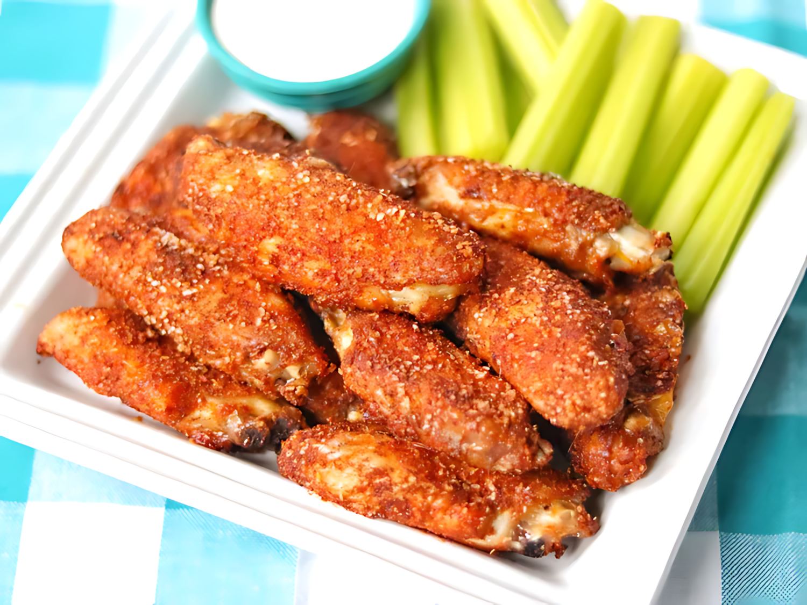

Air Fryer Buffalo Wings

Description
These crispy air fryer Buffalo wings are seasoned with garlic, paprika, and cayenne pepper. They take minutes to prep and always come out juicy inside. Serve with ranch or blue cheese sauce or eat as-is!
Recipe
Ingredients
- Meat: 1 pound chicken wings.
- Spices:
- 2 teaspoons sea salt.
- 1 teaspoon garlic powder.
- 1 teaspoon mustard powder.
- 1 teaspoon ground coriander.
- 1 teaspoon smoked paprika.
- ½ teaspoon cayenne pepper.
- ¼ teaspoon freshly ground black pepper.
How to Make Air Fryer Buffalo Wings Step-By-Step
Here's a very brief overview of what you can expect when you make homemade Air Fryer Buffalo Wings:
- Step 1: Preheat an air fryer to 380 degrees F (190 degrees C).
- Step 2: Combine sea salt, garlic powder, mustard powder, coriander, smoked paprika, cayenne pepper, and black pepper in a shallow bowl. Dredge each chicken wing in the spice mixture and set into the air fryer basket in one layer.
- Step 3: Cook in the air fryer until chicken wings are no longer pink at the bone and the juices run clear, about 30 minutes. An instant-read thermometer inserted near the bone should read 165 degrees F (74 degrees C). If wings are smaller, reduce cooking time.